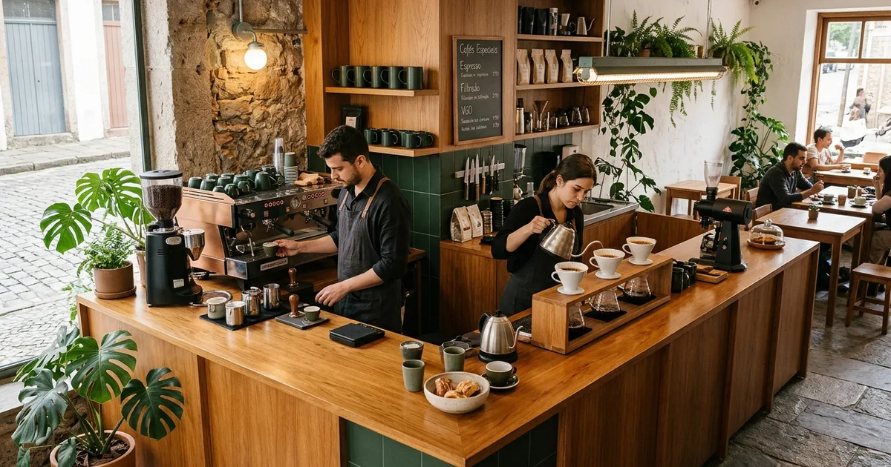

Guia Estadual · 30 Municípios
Cafeterias no Rio Grande do Sul
Acesse páginas dedicadas às 30 maiores cidades gaúchas com cafeterias reais, rotas no Google Maps, telefones confirmados e dicas por bairro.

Diversidade regional do café no território gaúcho
Da Região Metropolitana de Porto Alegre à Serra Gaúcha, passando pelo Vale do Taquari, Campanha, Fronteira Oeste, Missões e Litoral Sul, cada cidade do Rio Grande do Sul imprime identidade própria ao hábito de tomar café, cappuccino, doces e salgados.

Todas as 30 cidades do Rio Grande do Sul
Clique em qualquer município abaixo para visualizar os estabelecimentos confirmados e suas fontes.
- Porto Alegre - RS
- Caxias do Sul - RS
- Canoas - RS
- Pelotas - RS
- Santa Maria - RS
- Gravataí - RS
- Novo Hamburgo - RS
- Viamão - RS
- São Leopoldo - RS
- Passo Fundo - RS
- Rio Grande - RS
- Alvorada - RS
- Cachoeirinha - RS
- Santa Cruz do Sul - RS
- Sapucaia do Sul - RS
- Bento Gonçalves - RS
- Bagé - RS
- Uruguaiana - RS
- Erechim - RS
- Lajeado - RS
- Guaíba - RS
- Ijuí - RS
- Santana do Livramento - RS
- Cachoeira do Sul - RS
- Santa Rosa - RS
- Santo Ângelo - RS
- Esteio - RS
- Sapiranga - RS
- Alegrete - RS
- Farroupilha - RS
Espaço publicitário disponível